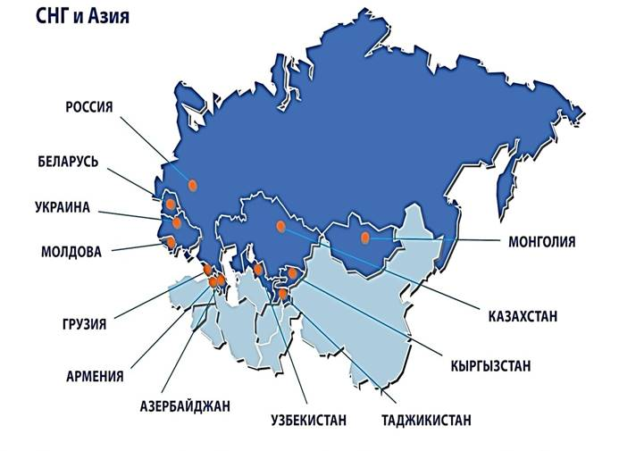

Продукция компании ATLANT давно заслужила признание покупателей
ATLANT известен как производитель популярных холодильников, морозильников и стиральных машин. С конвейеров предприятия сходит практичная и надежная техника, отвечающая высоким потребительским запросам. Недаром бытовая техника из Минска известна не только в нашей стране и других постсоветских республиках, но и во многих европейских странах и даже в далекой Австралии.

Черта ATLANT
Стратегической задачей компании ATLANT является развитие производственных мощностей для увеличения объёма и расширения номенклатуры выпускаемых изделий.
Многолетний опыт создания качественной и надежной продукции, развитие собственной технической базы, использование последних научно-технических разработок определяют успех и достижения компании
ATLANT – высокотехнологичное, динамично развивающееся предприятие. Мы идем в ногу со временем и стремимся выпускать изделия, максимально отвечающие запросам современного потребителя. Опыт, помноженный на стремление быть впереди – таков залог успеха компании ATLANT.
История ATLANT берет начало в 1959 году
Больше полувека назад завод начал выпускать бытовые холодильники. С тех пор мы освоили производство различной бытовой техники. Около 100 000 000 единиц продукции ATLANT радуют покупателей. А компания регулярно становится победителем профессиональных конкурсов.

Победитель и номинант профессиональных конкурсов
Работаем не для конкурсов, а на результат. Тем не менее нам очень приятно, что жюри и покупатели любят и отмечают продукцию ATLANT.

Экспортная деятельность нашей компании
Барановичский станкостроительный завод
Успех компании тесно связан с высоким уровнем организации производства. Новое оборудование литейного производства ЗАО «АТЛАНТ» обеспечивает высочайшее качество литья при самой современной технологии, перекрывает все собственные потребности производства и позволяет реализовывать литейную продукцию.